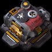
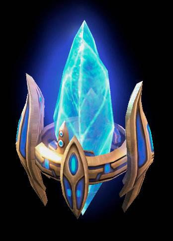
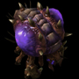
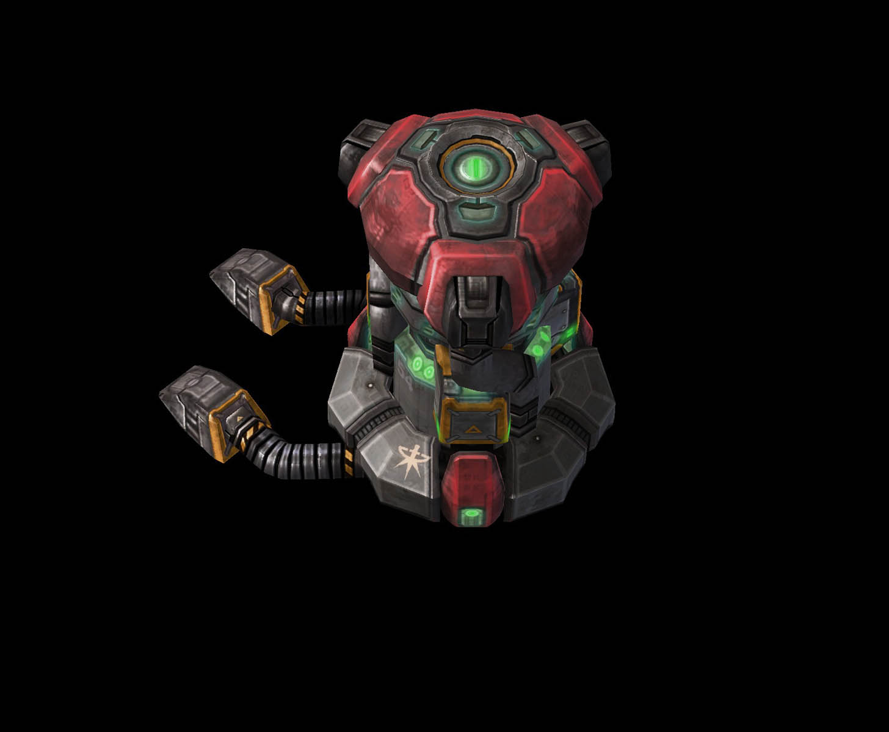
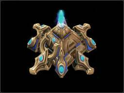
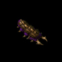

游戏基础
《星际争霸II》是一个实时进行的战略游戏。你可以从上帝视角观察和指挥部队，争夺战场的控制权，并最终击败你的对手。你可以在多人游戏比赛中使用以下三个《星际争霸II》的种族的任意一个：人类、星灵和异虫。
每个种族都拥有其独特的单位；这些单位在战场上各自有其特定的角色。结合不同的单位来组成一支多功能的部队，是走向胜利的常规道路之一。
你能指挥的最基础的单位是工人。他们会采集资源，让你用来扩张基地，以及为你日渐庞大的部队招兵买马，同时他们也能建造新的建筑。一些高级单位在你的基地达到特定要求之后就会解锁，你需要建造特定建筑，或者研究相应的科技。
在多人游戏比赛中，如果你将地图上敌人的所有建筑都摧毁，或者敌人向你投降，那么你就赢得了比赛。
资源

建造部队的费用是很高昂的，你必须派工人去收集资源来填饱这些饥饿的战争机器。在游戏中你可以收集两种资源：晶体矿和高能瓦斯。随着你的工人（人类的SCV、星灵的探机和异虫的工蜂）不断采集资源，你的资源储备会不断增加；
拓展基地、建造部队、研究科技和技能都需要消耗资源，让你的资源储备降低。如何管理资源，以及了解应该在什么时间将资源收入花费到哪里，是《星际争霸II》最重要的游戏技巧之一。
人口
你的基地会对部队的规模进行一个总量限制；换句话说，如果你想拥有一支庞大的部队，你必须投入一些资源来提升你的人口上限，从而得以维持一支更大的部队。每个种族都有其独特的方式来增加人口上限
|  | 人类补给站能为大型军队提供后勤支持。 |
|  | 星灵先进的部署技术需要水晶塔才能拓展行动。 |
|  | 如果没有王虫用心灵控制来约束部队，异虫虫群将无法扩张到一定数量。 |
侦察
了解敌人动向的基本方法是发动反击和部署有效制胜战略的关键。你只能看到战场上你的单位视野所能看到的范围，这就意味着你需要派遣单位去进行侦查。
早期侦查非常重要，所以记得在游戏过程中保持侦查的进行。工人可以作为游戏初期的有力侦查单位，但他们非常脆弱，很容易被消灭。如果他们不幸死亡，你已经侦查到的其余会被战场迷雾再次覆盖，如果你不再派遣单位前往，你将无法看到那里。
组建部队
前线的战术策略非常重要，但你也需要保持生产单位，从而占据先机。幸运的是，每个种族都有其独特的方式来将他们的生产能力提升至极限。
|  | 所有使用反应堆附件的建筑都可以获得另一个建造队列，让你能从该建筑中产出两倍的单位。记住，你可以通过建筑的起飞和降落来交换附件。 |
|  | 星灵可以使用枢纽的时空提速技能来暂时加速一个建筑的单位训练和研究速度。在打开折跃星门之后，你还可以立即折跃单位到友方的能量场中。结合折跃棱镜的技能在战场上的任意位置产生一个能量场，这个技巧可以非常致命。 |
|  | 异虫不仅有着天然的高产能，其后虫还可以使用孵化幼虫技能使单位的产能达到极限。在指定一个孵化场后，后虫可以使该建筑产出额外的幼虫。这样你可以快速地建造大量的部队。 |